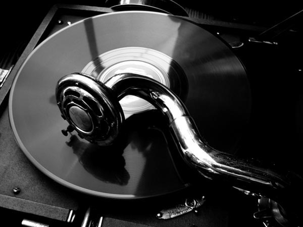
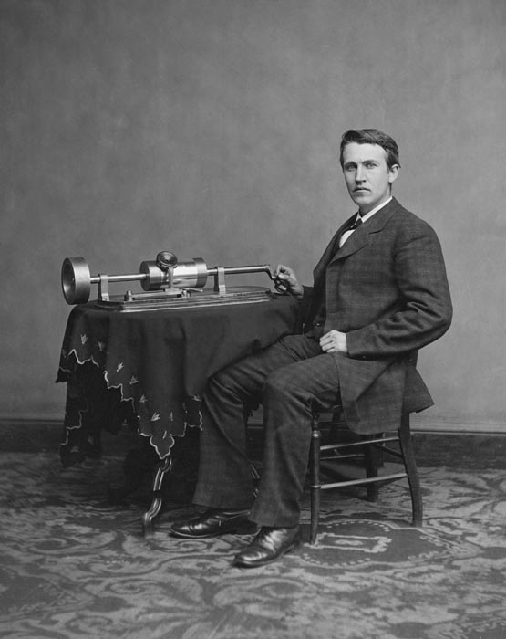
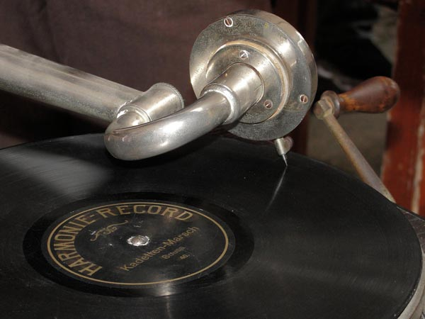

History of vinyl records

On March 25, 1857, the Frenchman Leon Scott de Martinville patented his invention, called the Phonograph, which consisted in the conversion of
air pressure fluctuations caused by the sound in an undulating line on a soot surface and the signal was amplified by a large bugle or
Bell. This new system still did not have a method of reproduction. Some years later, specifically in 1874, W.H. Barlow built the Logograph, element
which creates a graphic representation of the sound vibrations produced by speech.
The first albums were described as part of a device developed by Charles Cros, poet and inventor of French origin,
who was the first to propose an apparatus capable of capturing and reproducing sounds, called by him as the Paleophone. In April 1877,
Cros sent a sealed envelope with a letter to the Academy of Sciences in Paris with an explanation of the proposed method. October 10
In the same year, an article about his invention was published in “il semaine du Clerge”, written by Abby Leblanc. However, before Cros
could build a functional model, Thomas Alva Edison introduced the first system for the reproduction of sounds in the United States, the
Phonograph It is relevant to mention that Edison and Cros never met.

Thomas A. Edison initially experimented with a primitive telephone through which the paraffin paper ran under a writing pen,
while shouting through the speaker. The vibrations left a weak impression of his voice, which could be reproduced again.
Then he replaced the paper with a drum covered in aluminum foil and built the Phonograph, selecting a drum as a format
rotating on flat discs. The first piece that was recorded and played on the system was: "Mary had a little lamb" on November 21, 1877.
The device was shown to the scientific community on November 29 of the same year and the following Edison patented the method of sound reproduction on 15
January and the phonograph on February 19.
In 1881, Charles Tainter built the first side-cutting disc in Alexander Graham Bell's Volta laboratories in the United States,
but without any method of reproduction. By accident, Thomas A. Edison discovered what was termed "The Edison Effect"
- scientifically known as thermionic emission - in 1883, which became the basis of electron tubes and the foundation
of the electronics industry in the twentieth century.
Two years later, Chichester Bell (cousin of Alexander Graham Bell) and Charles Tainter, developed an improvement of the phonograph, in the laboratories Volta,
using a wax-coated cylinder with vertical cutting slots which they called the Graphophone. Then in 1887, Edison used a solid wax cylinder
in the phonograph and a battery motor, offering power to the machine instead of the archaic crank, which resulted in a constant pitch.
Later C. Tainter withdrew from the company and sued Volta Graphophone Company for patent infringement, although both parties reached an agreement.

In 1888, the German Emile Berliner created and patented the Gramophone, which unlike the phonograph, was not an engraved cylinder but a vulcanized rubber disk
and could be copied from the zinc master, which is coated with wax, which eliminated the continuous recording of cylinders by musical artists.
Berliner worked for Alexander Graham Bell from 1877 to 1883, and was hired to include his carbon microphone in the phone, in addition to other improvements.
After retiring he returned to his laboratory in Washington, where he created the Gramophone.
That same year, Columbia Phonograph Company was founded - an evolution of The American Graphophone Company and successor to Volta Graphophone Company -.
The company began marketing the gramophone in companies, but later found better revenue by recording music and leasing to
enclosures, where they enter as pioneers in nickel disk machines.